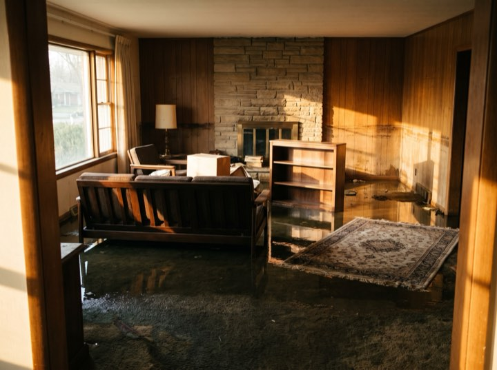
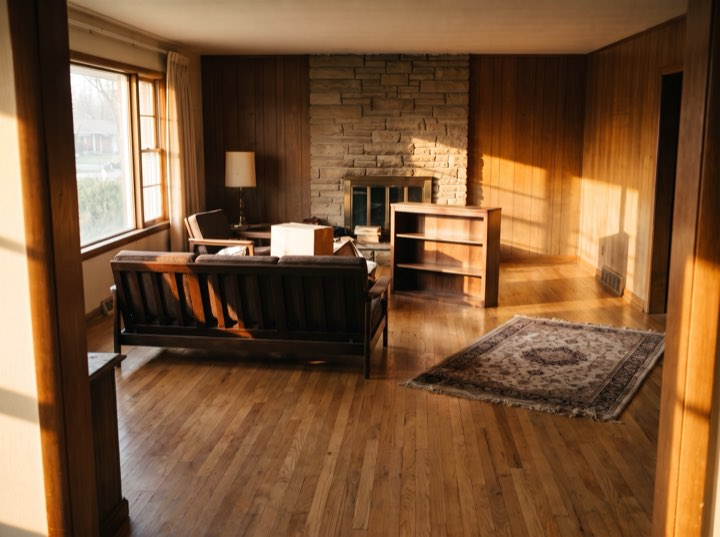
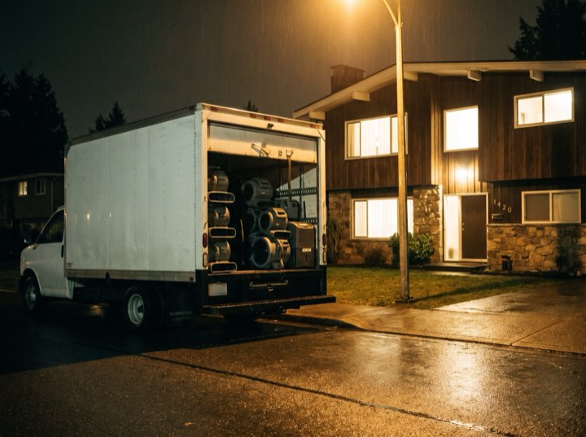
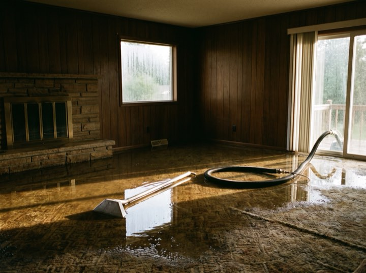
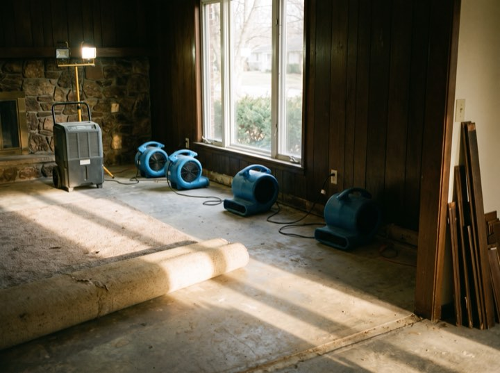

01
Water extraction & drying
Truck-mounted extraction, commercial air movers and moisture mapping so we can prove the structure is genuinely dry, not just dry-feeling.
Water · Fire · Mould · 24/7
Emergency water, fire and mould restoration. Crews are dispatched the moment you ring. The questions about carriers, deductibles and coverage happen afterwards, because the water isn't waiting for them.
Services
Every hour standing water sits, the drying time and the claim both grow. That is the whole reason we answer at three in the morning.
Truck-mounted extraction, commercial air movers and moisture mapping so we can prove the structure is genuinely dry, not just dry-feeling.
Soot removal, odour neutralisation and contents cleaning. Smoke damage travels far further than the fire itself.
Containment, HEPA filtration and post-remediation verification by an independent hygienist so the clearance means something.
Board-up, tarping and full structural drying. We mobilise extra crews before a forecast storm rather than after it.
Results
Certified and approved
Process
You are dealing with a disaster and an insurer at the same time. We take the second one off you.
A person answers, takes the address, and rolls a truck. The paperwork conversation happens once the extraction is running.
Stop the source, extract standing water, tarp or board up. The first hours decide the size of the claim.
Full photographic scope and moisture log, submitted to your carrier. We bill them direct and meet the adjuster on site.
Daily readings until verified dry, then reconstruction. You get the log, so nothing is disputed months later.
Dispatched
Extraction begins in the first hour. Who pays is worked out afterwards, with the readings to back it.





Do not wait for business hours. Every hour standing water sits, the cost and the damage climb. Crews are on call this minute.
We work with all major insurers and bill direct. Free emergency assessment.